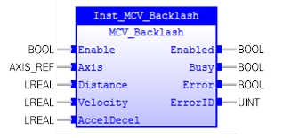

Allows backlash compensation to be loaded.

MCV_Backlash is used to allow backlash compensation to be loaded. This is achieved by applying an offset move when the motor demand is in one direction, then reversing the offset move when the motor demand is in the opposite direction. These moves are superimposed on the commanded axis movements.
MCV_Backlash does not affect the PlcOpen machine state.
Make sure the input and output parameters are of data type indicated in the table below.
The backlash compensation is applied after a reversal of the direction of change of the DPOS parameter.
An error will be generated when the axis is changed during ‘Enable = TRUE’.
MCV_Backlash is equivalent to TrioBASIC command BACKLASH. Please refer to TrioBasic Help for more information.
|
Name |
Data Type |
Description |
|
INPUTS |
||
|
Enable |
BOOL |
Enable execution. |
|
Axis |
AXIS_REF |
Reference to the axis |
|
Distance |
LREAL |
The distance to be offset in user units |
|
Velocity |
LREAL |
The speed at which the compensation move is applied in user units |
|
AccelDecl |
LREAL |
The ACCEL / DECEL rate at which compensation move is applied in user units |
|
Jerk |
LREAL |
Value of the jerk |
|
OUTPUTS |
||
|
Enabled |
BOOL |
The FB execution is enabled. |
|
Busy |
BOOL |
The FB new output values are to be expected |
|
Error |
BOOL |
Signals that an error has occurred within the FB |
|
ErrorID |
UINT |
Error identification |